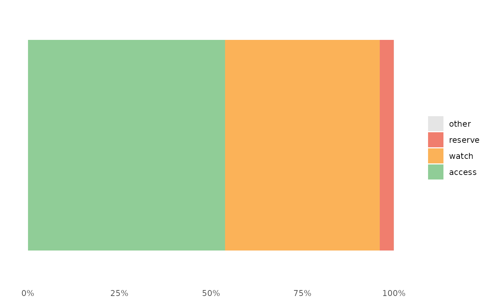

awr_plot.RdPlot AWaRe data
awr_plot( df, atc = atc, ddd = ddd, time = NULL, unit = NULL, ncol = NULL, legend.position = NULL, runs.analysis = TRUE, ... )
| df | Data frame. |
|---|---|
| atc | ATC code. |
| ddd | Amount. |
| time | Time period. |
| unit | Organisational unit. |
| ncol | Integer, number of columns in faceted plots. |
| legend.position | Character, where to put legend (e.g. 'none', 'right', 'bottom'). |
| runs.analysis | Logical, if TRUE (default) add runs analysis to plot. See Details. |
| ... | Other arguments to |
A ggplot object.
The plot show the relative distribution of antibiotics in the three AWaRe classes as suggested by WHO (https://adoptaware.org/): green = access, amber = watch, red = reserve.
If runs.analysis = TRUE (default) and time is provided, the
plot will include a horisontal line representing the median of the access
proportion. If the runs analysis finds non-random variation in the form of
either unusually long runs of data points on the same side of the centre
line or unusually few crossing of the centre line
(Anhøj 2014, doi: 10.1371/journal.pone.0113825
), the line will be dashed, otherwise
the line is solid.
awr_plot(abx_sales, atc, ddd)#>awr_plot(abx_sales, atc, ddd, unit = region)#>awr_plot(abx_sales, atc, ddd, time = month)#>awr_plot(abx_sales, atc, ddd, time = month, unit = region)#>awr_plot(abx_sales, atc, ddd, time = month, unit = hospital, ncol = 4)#>